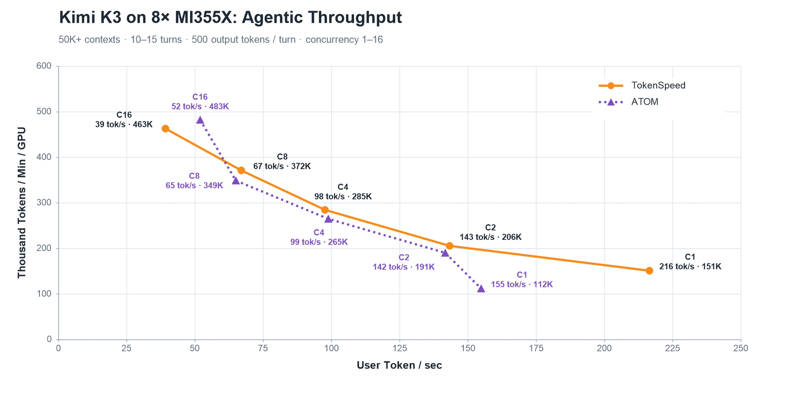
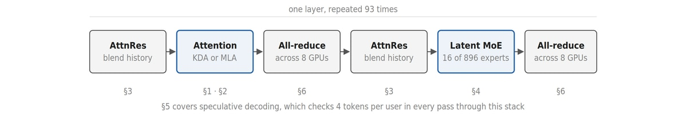
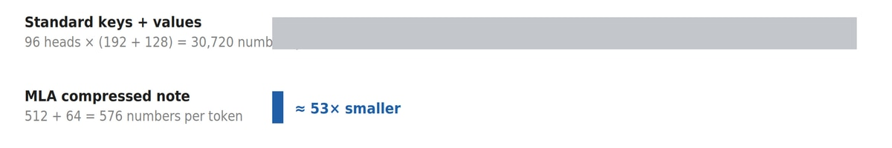
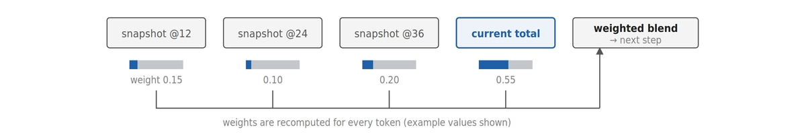
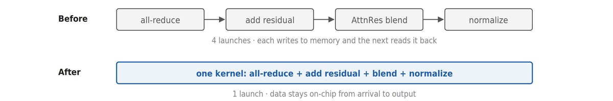
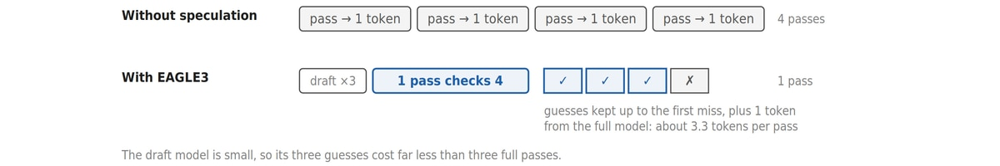
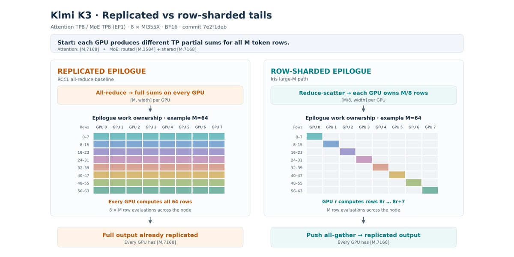

Kimi K3是月之暗面的agentic前沿模型，93层decoder、896个路由专家。AMD团队用开源推理引擎TokenSpeed把它跑在了8卡MI355X上，单用户216 tokens/s。这篇技术博客拆解了从KDA、MLA到MoE、Iris通信的全栈优化。
TokenSpeed是面向agentic负载的开源推理引擎：C++ 控制面管请求生命周期，Python执行面做快速模型开发，分层内核子系统经统一API接特化实现。测的是多轮SWE-smith编程会话回放，每轮50K token起始prompt，10到15轮，每轮回500 token，8卡MI355X、TP8、EAGLE3、FP8 KV，缓存命中率约90%。
单会话216 tokens/s（TPOT 4.62ms，TTFT 0.62s），是ATOM的1.4倍。并发2、4、8时持平或略快，并发16时每agent 39 tokens/s。注意精度并不对等：TokenSpeed的注意力投影用BF16，ATOM用FP8；KDA循环状态TokenSpeed用FP32，ATOM用FP16。

Kimi K3共93层decoder：69层用Kimi Delta Attention（KDA），24层用门控MLA。首层FFN稠密，其余92层用Latent MoE。Attention Residual（AttnRes）按12层分块保留表示，跨块加权混合。
执行用8路张量并行，注意力和MoE都是TP8、无专家并行。每卡算局部结果，集合通信汇总后再做依赖工作。以下优化都在MI355X（CDNA4）上测得。

标准注意力每步读全部历史，KDA用固定尺寸循环状态替代：每token更新状态并从中读取，decode单步算力不随上下文增长。优化抓数据搬运：状态按V-major存为 [value, key]，让规约行连续，decode状态更新从10.5微秒降到5.2微秒。
prefill按64 token分块，Gluon扫描把状态放寄存器里一遍出结果，不每块写checkpoint。门控key缓冲从token-major改chunk-major，加上设备端块索引与load/MFMA流水线重叠，8K prefill从659微秒降到595微秒。
decode原来是卷积、循环、归一化三个kernel各写各的，融合后中间结果全在片上。f_b衰减投影也算进循环kernel，省一次launch。投机验证不给每个拒绝位置存状态，用replay提交已接受前缀。最终decode单步融合4个kernel后快1.63倍，投机检查69层共省1.66倍时间。
剩下24层用MLA：96个注意力头不存各自KV，只存512宽共享latent加64宽key分量。decode把query转到压缩空间算完再投影回来，K3用NoPE，FP8缓存再砍一半字节。缓存小了，更多用户和更长上下文装得下，每步读的数据也少。
prefill是大计算活，FP8 Gluon kernel在每个计算单元跑两组线程错开一步：一组乘时另一组装下一块KV。缓存写与query准备融合成一个kernel，替代原来8个小launch。decode尾声把注意力规约、latent到value投影、门控、写回一次做完，不落地中间latent。

效果：FP8下4K/8K整块比可移植Triton MLA快3.8到5.1倍，8K query加32K缓存前缀快3.2倍。投机验证读一次历史而非每位置读一次，16用户、50K上下文快1.86倍，100K上下文快2.14倍。
AttnRes每12层一块保留表示，每步按学到的token相关权重混合历史块与当前残差。朴素实现每层要把最多9个大张量读两遍，还紧跟在TP all-reduce后面，每微秒都直接加到步长时间上。

优化三板斧：单遍打分混合归一化，32位累加；把原来编进程序的常量输入尺寸改成运行时值，避免新prompt长度触发100毫秒级重编译，一次长prompt测试从46秒降到16秒；逐快照读降低寄存器压力，8K token混合8快照快1.1倍。
跨卡把混合分片：pull reduce-scatter后每卡只处理1/8 token行的混合与RMSNorm，push all-gather拼回MoE输入，省掉7/8重复工作。更进一步，快照12层才变一次，大部分混合可提前算，只把最后一步折进all-reduce本身。融合后decode快4.1到5.9倍，8K prompt块快23倍。

92层MoE，每层896个路由专家，每token选16个，加2个常开共享专家。路由专家在3584宽latent空间算，再投影回7168宽。MXFP4专家权重省存储省搬运。
896个专家每步每专家只分到几个token，矩阵乘喜欢64/128行的整齐块，老kernel按块补零浪费大。decode改走每token的路由直达，小批量用FP8激活加MXFP4权重，32到64行时按专家排序路由让权重板复用。prefill用16/32行小专家块，合算时融合专家输出合并。
路由与共享分支的跨卡求和：两路BF16局部结果直接写进同一块可复用Iris缓冲，一次集合通信同时规约，省一次拼接拷贝。大批量时reduce-scatter每卡只做1/8行的归一化与投影，all-gather只收合并输出，流量砍三分之一。单卡专家计算32到64 token快2.2到2.3倍，MoE输入步单packed kernel比3个GEMM加SiTU快2到3倍。
投机解码用小draft模型提几个token，目标模型一次验证。三步EAGLE3配4个位置：检查4个候选，接受匹配前缀，在拒绝点或全接受后补目标token。贪心采样下接受即目标贪心选择。
投机改变每个组件的工作形状：16并发、4验证位时目标收到64行。对应优化散在各节：KV跨query位置复用、专家权重与top-k复用、注意力行分片。50K输入、500输出的合成集上，EAGLE3把单用户TPOT从12.9毫秒降到4.2毫秒，16并发从28.8毫秒降到11.4毫秒。

TP8下每层两次all-reduce：注意力输出投影后一次，专家计算后一次。Iris用Gluon原生写通信协议，对称堆缓冲让kernel直接读写对端显存，按消息尺寸与K3周边计算选优化kernel。
小消息把one-shot push all-reduce与残差更新、AttnRes混合、RMSNorm融在一起，省launch开销；MoE侧barrier-free all-reduce比RCCL快1.2到3倍，到达即规约不用单独barrier。大消息（MoE侧M≥40、注意力侧M≥56）用pull reduce-scatter行分片：每卡只算M/8行的尾部工作，87.5% 的路由归一化与上投影重复计算消失，上投影单token单卡从5138万降到642万FLOPs。

MoE all-gather只收合并后的隐宽输出，每行21 KiB降到14 KiB。92层MoE尾加92个注意力后尾，上投影共省41.36亿FLOPs每token每卡，集合通信省563.5 KiB载荷每token每卡。8K prefill块每卡少4.4 GiB载荷，8卡共35.2 GiB。
参考：https://www.amd.com/en/developer/resources/technical-articles/2026/kimi-k3-on-amd-instinct-gpus-with-tokenspeed.html